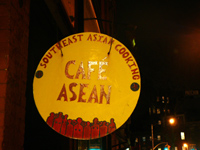

Café Asean and Tía Pol
Café Asean and Tía Pol

My birthday festivities of the last two weeks brought me to two restaurants I’d never been to, and each is worth mentioning here. First was Café Asean, a cute Southeast Asian restaurant on West 10th. I’d passed this place hundreds of times, and it’s always appealed to me. It turns out my instincts were right on. Café Asean is full of atmosphere, good food, and queens (including one wearing an honest-to-god kimono). Jake and I started with an appetizer of hot and crispy salmon spring rolls. He then had a dish of tender squid, and I had the grilled pork chop (which was actually three enormous pork chops), flavored with lemongrass and honey. With a bottle of wine, our meal came to less than $60. I’ll definitely visit this place again.
On my birthday night, Nathan took me and two friends to Tía Pol, an adorable, itty bitty tapas restaurant on 10th Avenue that’s been written up all over the Internet. I tried going here last year with a friend, but she was thirty minutes late and we couldn’t even find a spot to stand. The four of us waited nearly an hour, during which time we drank an entire bottle of cava. We were finally seated, and being drunk and starving, we immediately ordered approximately 100 things from the menu (including more wine).
Most of Tía Pol’s portions are quite small, but I find that when I eat many different things I fill up much more quickly. In rough order of deliciousness, this is what we had: chorizo con chocolate, paquetitos de jamón con alcachofa (artichoke wrapped in ham), patatas bravas, garbanzos fritos, croquetas de jamón, pinchos morunos (lamb skewers), pimientos estilo gernika, navajas y almejas (razor clams and cockles), and other things I was too tipsy to remember. The chorizo with chocolate, Jeannie’s suggestion, was unbelievably good, and so much better than I could have imagined. It was spicy and sweet and different. I may try contacting the restaurant to find out what kind of chocolate they use, because it’s perfect party food.
For dessert, Nathan and I relived our time among the Spaniards by ordering their riff on calimocho, which consists of red wine sorbet in a glass of coke. We came across the red wine and coke cocktail more than a few times when we lived in Tarbes (that’s my photo in the Wikipedia entry!), and it’s simultaneously revolting and addictive.
Tía Pol provided me with the rare experience of being seated at a table that is covered with delicious food. Apart from the food, the staff is nice, which is key in such a tiny, uncomfortable spot. They even guarded my beautiful birthday flowers in a backroom while we ate. You go in expecting attitude, and you’re killed with kindness. I can’t wait to go back.
Cafe Asean 117 W. 10th St., nr. Greenwich Ave. 212-633-0348
Tía Pol 205 Tenth Ave. between 22nd and 23rd Sts. 212-675-8805
Comments
What a wonderful birthday dinner you had! Many many happy returns of the day. I am so glad you enjoyed Tia Pol as much as you did – it’s such a lovely little place. And you raved about a lot of the dishes I didn’t get to try last time around, so of course now I’m really hankering to go back… :)
Add a comment